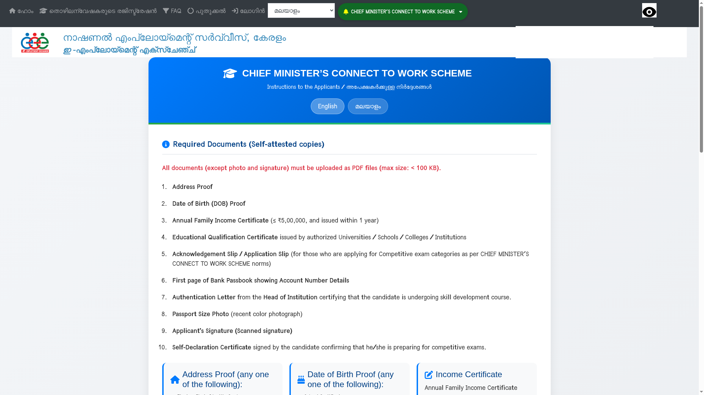

Kerala Connect to Work: Rs 1,000 a month, eligibility and certificates explained
Preparing for competitive exams or attending skill training? Kerala's Chief Minister's Connect to Work Scheme offers eligible applicants Rs 1,000 per month for one year. The official portal lists ages 18-30 and annual family income not exceeding Rs 5,00,000. Passing a course alone is not enough: the applicant must also be in an eligible skill course or have applied for competitive exams and be preparing for them.
Skill-training applicants need an Authentication Letter from the Head of Institution. Competitive-exam applicants need their exam application/acknowledgement slip and their own signed self-declaration. These are different documents. Do not ask an institution to certify a course you are not attending.
Who can apply?
- Age: 18-30 years.
- Annual family income: Rs 5,00,000 or less.
- Passed +2, VHSE, ITI, Diploma or Degree, and attending a Skill Enhancement/Skill Training course, or preparing for eligible competitive examinations.
- The portal lists UPSC, State PSC, Service Selection Board, Defence (Army, Navy, Air Force), Banks, Railways and other Central/State public-sector recruitment agencies. For the exam route, the Malayalam rules and certificate instructions require evidence that you have applied for the exam, not merely an intention to study someday.
This is a Kerala Employment Department scheme, not an all-India offer. Use the official form to check your address, category and qualification requirements. The checked summary does not give an age-calculation cutoff date; ask the Employment Exchange if you are at an age boundary.
Amount, application status and last date
The official portal states Rs 1,000 monthly for one year. This is financial assistance for eligible training/exam preparation, not a job offer or a guarantee that every application will be approved. No loan, interest charge or borrowing requirement is stated in the checked scheme pages, certificate forms or application manual. A bank passbook is requested for account details; that does not make this a bank scholarship or a loan.
On 16 November 2026 the application entry route, instructions and new-applicant option were accessible. We found no application closing date or exact closing time on the checked official pages/manual. We therefore do not invent a deadline or promise that applications stay open indefinitely. Recheck the live portal before applying. The page footer's software-update date is not an application deadline.
Documents everyone should prepare
The official instructions ask for self-attested copies. Prepare clear, readable scans:
- Address proof, any one: voter ID, school certificate, passport, Aadhaar or driving licence.
- Date-of-birth proof, any one: school certificate or birth certificate.
- Income certificate: issued by the Village Officer in the applicant's name within the last one year, showing annual family income not above Rs 5,00,000.
- Educational qualification certificate: from the authorised university, school, college or institution, in the applicant's name and showing the required qualification passed.
- Bank passbook first page: showing account details.
- Recent passport-size colour photo.
- Clear scanned applicant signature.
For competitive-exam preparation
- Upload the application form or acknowledgement slip generated by the relevant exam website, such as Kerala PSC, UPSC or SSC.
- Prepare the candidate's signed, self-attested declaration confirming that they applied for a competitive exam under the scheme and are preparing for it.
- The official declaration, Annexure 2 / certificate 2, has fields for residence, exam/post and application date, and the candidate's name/signature. It also says to inform the Employment Exchange when employed.
Official candidate self-declaration PDF, identified by its contents (Annexure 2).
Authentication Letter: who issues it?
For the skill-course route, the Head of Institution certifies current enrolment in the skill enhancement/training course and the period of study. This is not an income certificate, not a gazetted-officer attestation and not a document every exam-preparation applicant automatically needs.
The official institution certificate, Annexure 1 / certificate 1, asks for the applicant's residence, training details and start date, with the institution head's name/signature, place/date and office seal. Its note says the Head of Institution must issue it personally and must not delegate this to another officer.
Official institution Authentication Letter PDF, identified by its contents (Annexure 1).
During our check, the two English download links and filenames were misleading: the file named declaration_by_instn_head.pdf contained the candidate self-declaration (Annexure 2); self declaration by registrant.pdf contained the institution-head certificate (Annexure 1). The direct links above are labelled by the actual PDF contents we opened. The department may fix these later, so always read the heading and signature block before filling or signing. The Malayalam instruction-page links led to the matching content.
File format and size
Certificates and other documents, except photo/signature, must be PDF. The English instructions say less than 100 KB; other portal text says maximum 100 KB. Keep each PDF below 100 KB to satisfy the stricter wording. Photo and signature must be JPG/JPEG, maximum 100 KB each. Keep them below the cap too and check that text remains readable. Do not upload Aadhaar, bank details or certificates to unknown compression websites.
How to apply online
- Open the official document instructions, read both your category and the scheme eligibility.
- Prepare the common documents and the correct category-specific certificate. Use the official blank forms above.
- At the application entry page, existing registrants can enter their Employment Registration Number and use Check Registration. The portal also provides Proceed as New Applicant for those not registered. Do not invent a registration number.
- Follow the form, enter accurate personal/address/qualification details and upload your files. The official Malayalam quick-reference manual shows the sequence and temporary application number.
- Review every detail and the self-declaration before Confirm Your Application. The homepage warns that the application cannot be edited after confirmation.
- Download and keep the completed application copy and number. From the scheme menu, use Know Your Application Status with the application/mobile number. The manual says incomplete applications can be resumed there by choosing to complete the application.
We opened the public registration-check page and clicked the new-applicant route; it navigated to the apply page. We did not enter personal details, claim possession of documents, upload anything or submit. The later upload/confirmation steps above are described from the department's manual, not a completed test application.

Help, safety and video guide
For form errors, the portal directs applicants to their nearest Employment Exchange. The homepage lists district help lines, available on working days from 10 AM to 5 PM. Directorate: 0471-2301249 / 0471-2301389; email deker.emp.lbr@kerala.gov.in. Never share OTPs or pay an intermediary promising guaranteed approval.
No fee is stated in the checked scheme instructions/manual. We did not reach final submission, so this is not a guarantee about every service or document-issuance cost. We did not verify a current English/Malayalam video walkthrough; the official Malayalam PDF manual is the checked walkthrough for this guide.
Sources and check limits
Official homepage and submission warning · Eligibility/application entry · Certificate instructions · Public application page · Official Malayalam application manual · Institution certificate, contents checked · Candidate declaration, contents checked. Checked 16 November 2026. No closing date verified. AiCoN explainer, not a government publication.